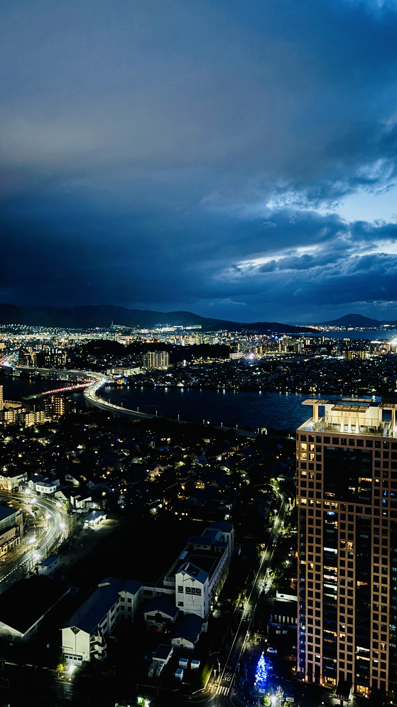
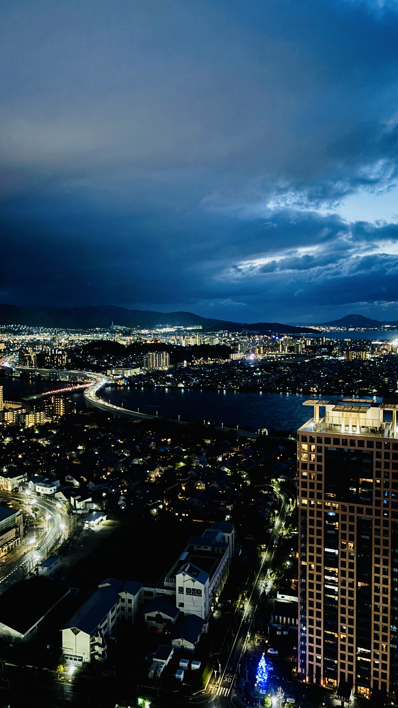

후쿠오카

 

후쿠오카는 일본 규슈 지역의 대표적인 도시로, 온화한 기후와 따뜻한 분위기가 매력적인 곳입니다.
맛있는 음식, 편리한 교통, 그리고 여유로운 도시 분위기로 많은 여행객들에게 사랑받고 있습니다.
가볼만한 곳
1. 캐널시티 하카타
캐널시티 하카타에서는 다양한 먹거리와 쇼핑몰을 즐길 수 있습니다. 다양한 쇼핑 브랜드가 입점해 있으며 영화관도 있습니다.
특히나, 특정 시간마다 분수쇼가 열립니다. 아름다운 음악과 함께 분수쇼를 관람해보세요.
2. 모모치 해변과 후쿠오카 타워
도심에서 버스를 타고 갈 수 있는 모모치 해변에서는 아름다운 바다를 볼 수 있습니다.
또한, 모모치 해변 근처의 후쿠오카 타워에서는 후쿠오카의 아름다운 전경을 관람할 수 있습니다.